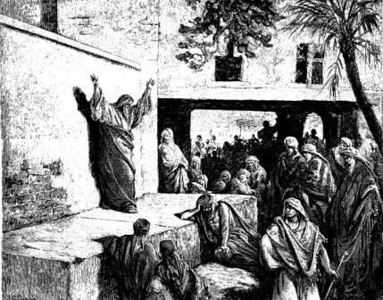
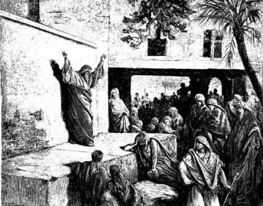

Micah (Micah)
Translated into ASL by David Bar-Tzur
Created 30 April 2007, links updated monthly with the help of LinkAlarm.
(The image above is from Micah exhorting the Israelites to repentance - Gustav Doré.)

Under construction

(The image above is from Micah exhorting the Israelites to repentance - Gustav Doré.)
Under construction
EXPLANATION OF THE GLOSSING SYSTEM
(to understand how I describe the signs in this translation).
| Chapter 5 (6-14) | Chapter 6 |
CHAPTER 5 (6-14)
6. 7. JEWISH PEOPLE STILL LEFT WILL MIX MANY NATION. IDEA~LIKE LION HUNT FOOD. LIKE LION MIDDLE SHEEP SCADS-OF. PAWS-TRAMPLE-GROUND, CLAWS-TEAR, WHO SAVE VICTIM WHO?
8. PRAY+ YOUR-rt HAND BEAT PEOPLE OPPOSE YOU-rt. YOUR-rt ENEMY CHOPPED-DOWN LIKE GRASS.
9. THE-rt LORD ANNOUNCE (role play God) THAT DAY YOUR(pl) HORSE ME DESTROY AND YOUR(pl) CHARIOT OVERTURN.
10. alt.YOUR CITY ME RUIN AND YOUR FORTRESS COLLAPSE.
11. YOUR(pl) WITCH ME REMOVE AND YOUR MAGIC WILL GONE.
12. SHAPES YOU(pl) WORSHIP AND PILLARS YOU(pl) FEEL HOLY, ME DESTROY. YOU(pl) BUILD THINGS WORSHIP DON'T.
13. TREE POST ME TEAR-DOWN AND alt.YOUR CITY DESTROY.
14. ANY NATION NOT OBEY, ME ANGRY, BLOW-TOP, REVENGE"each".
 EWISH PEOPLE THEY-rt STILL LEFT@rt WILL LIVE WITH MANY NATION AND TEACH-lf THEM-lf HELP-lf THEM-lf CALL-ON GOD, NOT DEPEND-ON OTHERS HUMAN. THEY-lf WILL FEEL INVIGORATED IDEA~LIKE GRASS HAPPEN THE-rt LORD SEND WATER SPRINKLE-DOWN-ON.
EWISH PEOPLE THEY-rt STILL LEFT@rt WILL LIVE WITH MANY NATION AND TEACH-lf THEM-lf HELP-lf THEM-lf CALL-ON GOD, NOT DEPEND-ON OTHERS HUMAN. THEY-lf WILL FEEL INVIGORATED IDEA~LIKE GRASS HAPPEN THE-rt LORD SEND WATER SPRINKLE-DOWN-ON.

{kind=link}